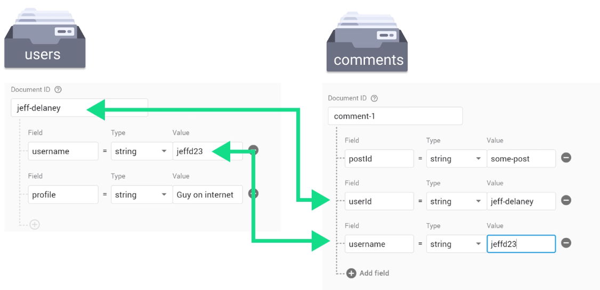

Firestore Advanced Techniques
Data Duplication (Denormalization)
Data Duplication / Denormalization is considered bad practice in SQL database.
⭐But it is very normal use cases in NoSQL and firestore.
Perfect for data that required
Reads > Writes + Rarely changed data.
Pros: Achieve single document read for the data.
Cons: Writing the data will be required for all the document that it denormalized to.